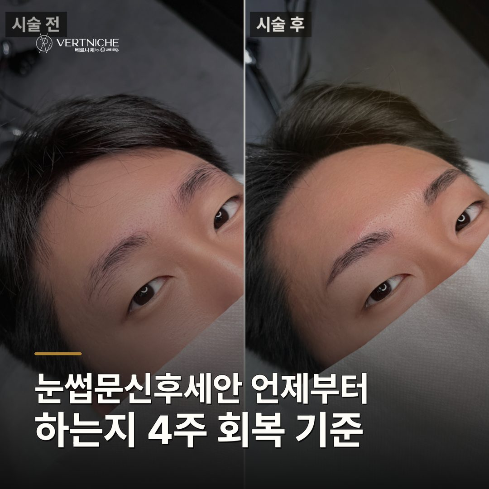

Care notes ·
눈썹문신후세안 언제부터 하는지 4주 회복 기준

- 눈썹문신 후 세안은 당일부터 가능하고 눈썹 부위만 피하면 된다
- 2~4일차 진해지고 8~14일차 연해지는 것은 정상 과정이다
- 최종 결과는 28일 뒤에 본다
1일차부터 4일차, 색이 진해지는 게 정상입니다
시술 당일은 잉크색이 아직 발색이 안 된 상태예요. 그래서 오히려 어색하게 느껴질 수 있어요.
5일차부터 7일차, 딱지는 절대 뜯지 마세요
이 구간에서 탈각이 시작돼요. 딱지나 각질이 일어나면서 눈썹이 부분부분 벗겨지는데, 여기서 가장 많이 하는 실수가 손으로 뜯는 겁니다.
8일차부터 14일차, 연해 보여도 실패가 아닙니다
탈각이 끝나면 이번엔 반대로 눈썹이 연해 보여요. 딱지가 다 떨어지고 나면 "잉크가 다 빠진 거 아닐까" 싶을 만큼 흐릿해지거든요.
15일차부터 28일차, 이때 보이는 게 진짜 결과입니다
15일차를 넘기면서 피부 속에 자리 잡은 색소가 서서히 올라와요. 연했던 눈썹이 다시 또렷해지고, 기존 눈썹결과 자연스럽게 어우러지기 시작합니다.
자주 묻는 질문
시술 후 언제부터 세안해도 되나요?
당일부터 세안은 가능해요. 다만 폼클렌징은 1~2주 동안 눈썹 부위를 피해서 하세요. 물이 살짝 닿는 건 괜찮지만 문지르거나 오래 적시는 건 피하시는 게 좋습니다.
직장인인데 시술 후 바로 출근해도 되나요?
출근은 가능해요. 다만 첫 2일은 색이 진하게 올라오는 시기라 그 점만 감안하세요. 땀 많이 나는 현장직이거나 사우나, 수영을 자주 하시는 분이라면 그 일정이 없는 주에 시술 잡으시는 걸 권합니다.
딱지가 떨어지면서 색이 너무 빠진 것 같은데 리터치 받아야 하나요?
8일차부터 14일차 사이엔 원래 연해 보여요. 이 시기 판단은 너무 이릅니다. 28일 지나서 색소가 다 올라온 뒤에 보시고, 그때 아쉬운 부분이 있으면 리터치를 생각하시면 돼요.
요약입니다. 사례와 사진이 있는 전체 글은 네이버 블로그에서 볼 수 있습니다.